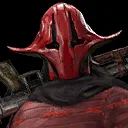
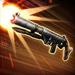
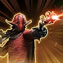
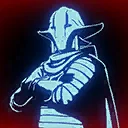

Captain Ithano
The Crimson Corsair led a crew of pirates, and gained a reputation as the best pirate in the region

The Crimson Corsair led a crew of pirates, and gained a reputation as the best pirate in the region

Deal Physical damage to target enemy and gain Offense Up for 1 turn. During Ithano's turn, grant Foresight to Pirate Support and Tank allies for 1 turn.

Deal Physical damage to target enemy. If the target enemy has Defense Up or Protection Up, Steal them, reset their duration and grant all Stolen buffs on himself to all Pirate allies then attack again dealing 50% more damage. If no buffs are Stolen, attack again and inflict Defense Down on target enemy for 1 turn.
If Ithano has 3 or fewer stacks of Profit, dispel all buffs on the target enemy. If Ithano has more than 3 stacks of Profit, he dispels all debuffs on himself.
Steal: Dispel target buffs from enemies and grant them to self
Deal Physical damage to all enemies, gain Defense Penetration Up for 2 turns and Expose the target enemy for 1 turn. If the ally in the Leader slot is a non-Galactic Legend Pirate Support and Ithano has Foresight, attack again and call allied Kix and Quiggold to assist.
If Ithano has at least 4 stacks of Profit, inflict Fear on the target enemy for 1 turn at the end of his turn, which can't be evaded or resisted.

Ithano gains 100% Offense. At the start of battle, all Pirate allies gain 70% Critical Chance, 30% Max Health and Max Protection then gain Offense Up and Tenacity Up for 1 turn. At the start of their turn, if another Pirate ally has more buffs than debuffs, they gain 1 stack of Profit (stacking, max 5) and Ithano gains 1 stack of Profit. If they have more debuffs than buffs, they lose a stack of Profit and dispel all debuffs on themselves. At the start of Ithano's turn, he gains 1 stack of Profit and dispels all debuffs on himself. Whenever Ithano removes a stack of Profit on himself, he gains 20% Offense (max 200%) for the rest of the battle.
At the start of battle, if all allies are Pirates, Captain Ithano gains 50% Offense and the first time Ithano is defeated, he is revived with 50% Health.
While Ithano has Foresight, he gains 30% Offense and whenever Foresight expires on him, Ithano gains Retribution for 1 turn.
Whenever Quiggold falls below 50% of his Health for the first time, Ithano Marks himself for 2 turns. While Ithano is Marked this way, he gains 80% bonus Protection, 40% Offense and Tenacity Up until Marked expires. If Ithano defeats an enemy while he is Marked this way, he gains 2 stacks of Profit (stacking, max 5).
Whenever Ithano uses an ability on his turn, he gains Foresight for 1 turn. Whenever Ithano uses a Special ability and has at least 4 stacks of Profit, remove all stacks and deal bonus True damage to the target enemy. If Pirate King Hondo Ohnaka or Maz Kanata is the ally in the Leader slot, the cap for Profit is removed for Ithano.
Omicron Boost : While in Territory Wars: At the start of each encounter, Ithano gains Accuracy Up and Speed Up for 5 turns. Whenever Ithano scores a critical hit, call a random Pirate Support and Tank ally to assist dealing 50% more damage.
At the start of his turn, if there is no ally Galactic Legend and Ithano has more than 3 stacks of Profit, inflict Deathmark on the healthiest enemy for 1 turn, which can't be dispelled or evaded. If an enemy is defeated, all Pirate allies gain 3 stacks of Profit (stacking, max 5) and gain Defense Penetration Up, Offense Up and Retribution for 2 turns.